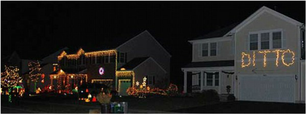

Treat Tables -If you'd like to host, please e-mailboard@prairiefieldshoa.com
We will be looking for folks to provide and monitor the treat tables/voting stations.
Each table will be given $30 to purchase the treats. We would like to focus on having these tables stationed at corners throughout the neighborhood to make it easy for visitors to find. This year we are looking to have ballot style voting sheets that people can carry with them as they look at the houses.

Prices!
As was the case last year there will be trophies for 1st, 2nd, and 3rd Place as well as honorable mention ribbons. We will also have a fun prize for one random participating house!
It's time to cast your vote for the four open positions on the board for 2017/18! Voting will close November 30th, 2016. You can access the electronic ballet here. To opt for a paperballot, please drop a note in theHOA dropbox. One vote per household. Homeowners must be a member in good standing tovotein theelection, and not owe the association more than $10. You can access the past due listby clicking here.
If you are interested in running for a seat on the PF HOA Board of Directors, you can download an application form here. The day to day operations of the PF HOA are run by an all-volunteer Board of Directors, along with help from many other committee volunteers. The Board establishes the annual dues assessment and is responsible for using the money assessed to maintain and improve HOA property and offer programs which are of value to Prairie Fields residents, thereby increasing the value of the neighborhood. If you have 1-2 hours a month to donate to the neighborhood, you are encouraged to run one of the 3 upcoming vacancies on the Board for a term which begins January 1, 2017 and runs through December 31, 2017. Applications must be submitted by October 21. This year, voting will be conducted electronically. You can opt for paper ballots by dropping a note in the HOA dropbox. Homeowners must be a member in good standing to vote in the election, and not owe the association more than $10. You can access the past due list by clicking here. For more information, please email board@prairiefieldshoa.com